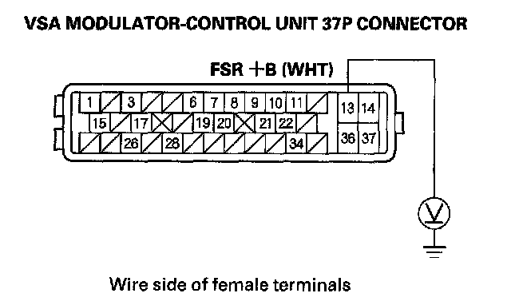
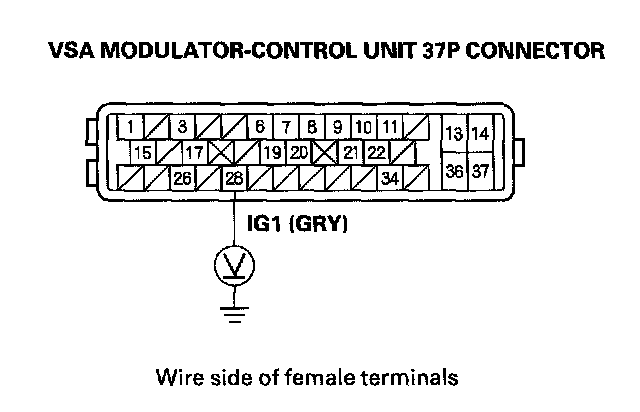

DTC 61-23
DTC 61-01: VSA Modulator-control Unit Initial IG Low VoltageDTC 61-21: VSA Modulator-control Unit Power Source Low Voltage 1
DTC 61-22: VSA Modulator-control Unit Power Source Low Voltage 2
DTC 61-23: VSA Modulator-control Unit Power Source Low Voltage 3
1. Turn the ignition switch ON (II).
2. Clear the DTC with the HDS.
3. Turn the ignition switch OFF, then start the engine.
4. Check for DTCs with the HDS.
Is DTC 61-01, 61-21, 61-22, or 61-23 indicated?
YES - Go to step 5.
NO - Intermittent failure, the system is OK at this time. Check for loose terminals at the VSA modulator-control unit 37P connector. Refer to intermittent failures troubleshooting.
5. Check and note BATTERY voltage in the VSA DATA LIST with the HDS. If the voltage listed is 0 V, go to step 8, otherwise go to step 6.
6. Using a voltmeter, measure and note the voltage between the battery terminals.
NOTE: If the voltage is below 9.5 V, check the battery, and troubleshoot the alternator regulator circuit.
7. Compare the voltage noted in step 5 to the voltage in step 6.
Is the difference between the two voltage readings less then 3 V?
YES - Intermittent failure, the system is OK at this time. Check for loose terminals at the VSA modulator-control unit 37P connector. Refer to intermittent failures troubleshooting. If the code resets after clearing, replace the VSA modulator-control unit.
NO - Check for loose terminals in the VSA modulator-control unit 37P connector. If necessary, substitute a known-good VSA modulator-control unit, and retest.
8. Turn the ignition switch OFF.
9. Disconnect the VSA modulator-control unit 37P connector.
10. Measure voltage between VSA modulator-control unit 37P connector terminal No. 13 and body ground.

Is there battery voltage?
YES - Go to step 11.
NO - Repair open in the wire between the No. 3 FSR (40 A) fuse in the under-hood fuse/relay box and the VSA modulator-control unit.
11. Turn the ignition switch ON (II).
12. Measure voltage between VSA modulator-control unit 37P connector terminal No. 28 and body ground.

Is there battery voltage?
YES - Check for loose terminals in the VSA modulator-control unit 37P connector. If necessary, substitute a known-good VSA modulator-control unit, and retest.
NO - Repair open in the wire between the No. 4 (7.5 A) fuse in the under-dash fuse/relay box and the VSA modulator-control unit.